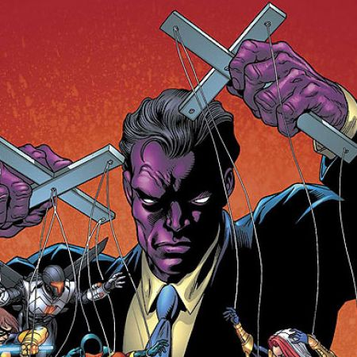

Purple Man: The Voice of Control

Zebediah Killgrave transforms a failed spy mission into a path of psychological terror. His chemical accident grants him the power to control minds through pheromones, which he uses to manipulate others for his own gain and amusement.
Origin:
- Croatian intelligence agent on a failed mission
- Exposed to experimental nerve gas
- Skin turned purple from chemical reaction
- Developed mind-controlling pheromones
Powers:
- Mind control through verbal commands
- Pheromone production affects behavior
- Commands last hours after exposure
- Control multiple victims simultaneously
- Healing factor and enhanced durability
Methods:
- Uses victims for personal gain
- Creates chaos through controlled pawns
- Manipulates from behind the scenes
- Psychologically torments his targets
Notable Crimes:
- Mass mind control of civilians
- Manipulation of superheroes
- Multiple counts of psychological torture
- Widespread financial fraud through controlled victims
Weaknesses:
- Powers require proximity to victims
- Strong-willed individuals can resist
- Pheromones blocked by sealed systems
- Limited effectiveness against non-humans
Killgrave represents one of the most insidious threats in the superhuman community. His ability to remove free will makes him particularly dangerous, as his victims often have no memory of their actions under his control. Various superhero teams have established specific protocols for dealing with Purple Man, including specialized containment systems and air filtration equipment.